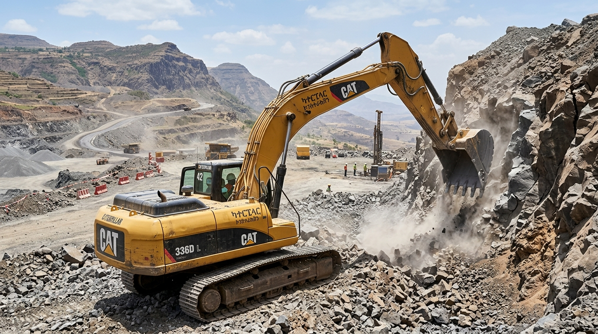
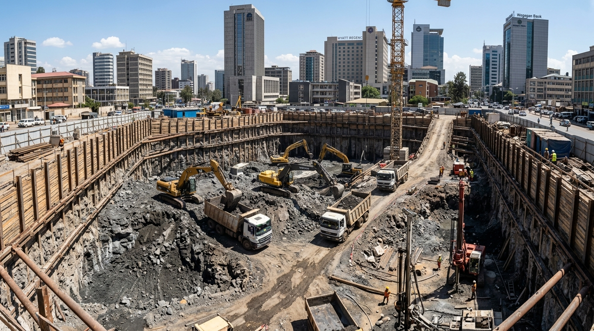
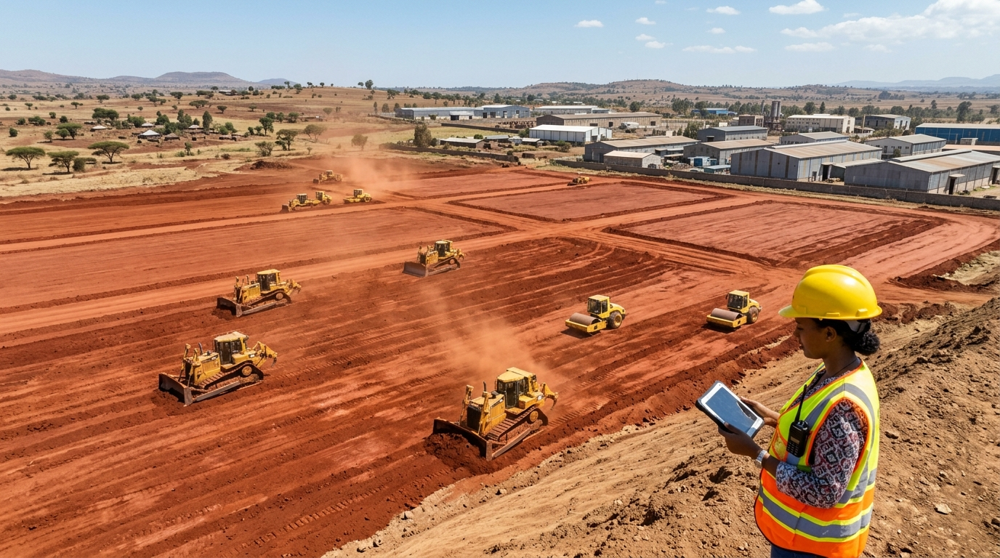
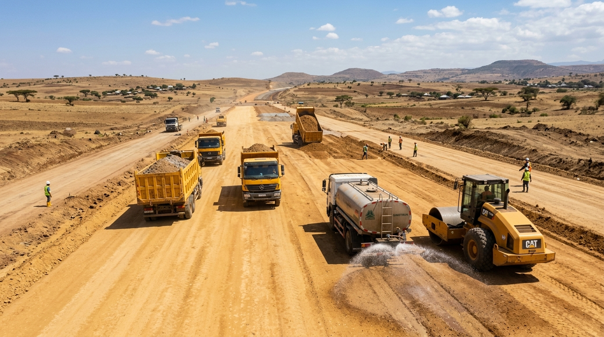
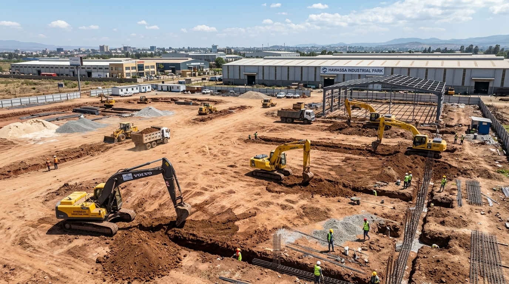
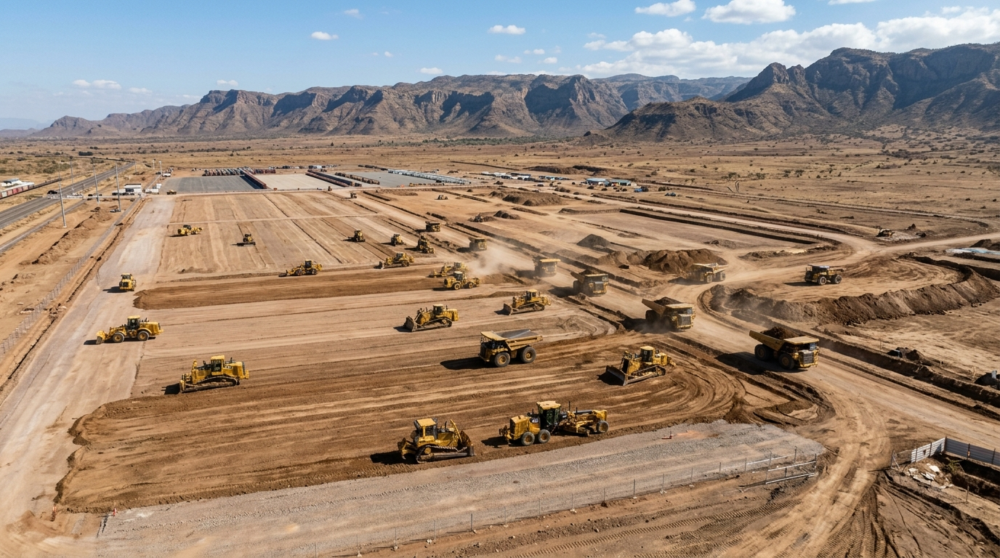

POWERING ETHIOPIA'S GROUNDWORK.
Professional excavation, earthmoving, foundation digging, land leveling, and site preparation services for projects throughout Ethiopia.

SPECIALISTS IN EXCAVATION & EARTHMOVING
AXUM EXCAVATION focuses strictly and exclusively on excavation, earthmoving, land preparation, foundation digging, grading, and related groundwork services across Ethiopia.
We provide the heavy machinery, skilled operators, and geotechnical execution needed to clear, excavate, shape, and stabilize land for engineering projects. We do not engage in general building construction, house finishing, or remodeling—our entire dedication is on powering the groundwork.
Tough Highland Rock Ripping
Specialized hydraulic breakers and ripper bulldozers to excavate dense volcanic basalt formations without damaging surrounding structures.
Deep Foundation & Trench Excavation
Digging subterranean basements, structural footings, and utility channels with precision laser verification and soil removal coordination.
Mass Earthmoving & Pad Leveling
Large-scale cut and fill operations, platform grading, and compaction to prepare clean, stable building pads and road subgrade corridors.
EXCAVATION SOLUTIONS FOR YOUR PROJECT
Specialized soil and rock excavation, precision grading, foundation digging, and bulk earthmoving operations tailored to Ethiopian site conditions.

Land Excavation
Excavating soil and earth for suitable site and groundwork requirements. High-volume bulk cutting, precision hillside benching, and specialized rock ripping in tough volcanic formations throughout Ethiopian terrain.
| Service Focus: | Mass earth cut & rock ripping |
| Slope Profiling: | 1:1 to 1:1.5 stable benching |
| Terrain Suitability: | Basalt, clay, silt & gravel |
Foundation Excavation
Digging foundation areas and trenches according to project specifications. Precise subterranean basement digging, structural pad footing excavation, and perimeter rock chiseling designed to prepare clean, engineer-approved foundation beds.
| Service Focus: | Deep foundation cuts & basements |
| Depth Capacity: | Up to multi-level basement depths |
| Precision Tolerance: | Laser verified footing elevations |
Land Clearing and Site Preparation
Preparing suitable sites for excavation and subsequent construction work. Includes topsoil stripping, tree stump grubbing, vegetation removal, surface obstruction clearing, and temporary haul access cutting.
| Service Focus: | Clearing, grubbing & topsoil strip |
| Material Handling: | Topsoil stockpiling or removal |
| Site Scale: | Single plots to multi-hectare sites |
Land Leveling and Grading
Cutting, filling, grading, and leveling land to achieve specified contours and elevations. Ideal for building platform pads, industrial compound leveling, and agricultural site grading using 3D laser-guided motor graders.
| Service Focus: | Cut & fill equilibrium grading |
| Grade Tolerance: | ±15 mm laser target accuracy |
| Compaction: | Roller compaction to density spec |
Road Earthworks
Excavation, earthmoving, and grading associated with road preparation. Aligning corridors, cutting subgrade profiles, removing expansive black cotton soils, digging road side ditches, and leveling compacted capping layers.
| Service Focus: | Subgrade excavation & corridor cut |
| Standard Alignment: | ERA subgrade excavation guidelines |
| Drainage Cuts: | Side ditch and culvert excavation |
Trenching and Drainage Excavation
Excavation for drainage channels and suitable utility trenches. Precision digging for stormwater culverts, pipe beds, electrical conduit banks, and irrigation channels through tough rocky or dense clay formations.
| Service Focus: | Linear ditch & culvert trenching |
| Trench Profiles: | Vertical cuts or sloped drainage |
| Bedding Prep: | Clean excavation to invert elevation |
Soil Excavation and Removal
Excavating and loading soil, with transportation or disposal arrangements confirmed separately according to project terms. We manage the fast, efficient extraction and loading of unsuitable or surplus spoil to keep your site clean.
| Service Focus: | Excavation & site spoil loading |
| Haul Arrangements: | Confirmed per project specification |
| Loading Velocity: | Continuous cycle with large buckets |
Bulk Earthmoving
Moving soil and other suitable earth materials for larger projects. Coordinated high-tonnage earth shifting across expansive footprints including industrial parks, logistics terminals, and major civil infrastructure developments.
| Service Focus: | Large-scale material shifting |
| Throughput Scale: | Tailored to project schedule |
| Operation Mode: | Single or multiple shift mobilization |
HEAVY EQUIPMENT FOR EXCAVATION
The machinery classes below represent the heavy equipment categories deployed for our excavation and earthmoving services. Equipment configurations and capacities are assigned based on your project's verified site requirements and ground geology.
Excavators
Hydraulic crawler excavators used for foundation digging, mass rock and soil extraction, deep basement cuts, and hydraulic breaker operations.
| Application: | Digging, trenching, rock breaking |
| Class Range: | Medium to heavy crawler rigs |
| Attachments: | Rock bucket, hydraulic hammer |
Bulldozers
Tracked crawler tractors equipped with heavy blades and rear ripper shanks for shattering compact ground, hillside benching, and mass material pushing.
| Application: | Rock ripping, bulk pushing, clearing |
| Class Range: | Heavy earthmoving dozer class |
| Attachments: | Single/multi-shank giant ripper, blade |
Wheel Loaders
High-capacity wheeled loaders designed for loading excavated soil, gravel, and rock spoil into trucks, and handling bulk materials across the site.
| Application: | Soil loading, stockpiling, site clearing |
| Class Range: | Articulated wheel loader class |
| Bucket: | Heavy material bucket |
Dump Trucks
Heavy-duty on-road tippers and off-road articulated haulers deployed to transport excavated spoil and import selected earth material.
| Application: | Soil removal, spoil hauling, fill delivery |
| Class Range: | 6x4 tipper & articulated hauler class |
| Arrangement: | Arranged per project specification |
Motor Graders
Precision grading machines with adjustable moldboards and laser guidance capability for exact pad leveling and road subgrade shaping.
| Application: | Land leveling, subgrade grading, ditching |
| Class Range: | Heavy motor grader class |
| Precision: | Laser and manual grading control |
Backhoe Loaders
Versatile machines equipped with front loader bucket and rear excavator arm for trenching, footing digging, and localized utility excavations.
| Application: | Trenching, utility digging, light leveling |
| Class Range: | Four-wheel-drive backhoe class |
| Mobility: | High maneuverability for tight sites |
* Note: Machinery specifications are indicative classifications. Specific machine models and capacities are confirmed based on availability and ground requirements for each project.
EXCAVATION & EARTHMOVING PROJECTS
Demonstrations of deep foundation digging, mass land cuts, precision grading, and site preparation across Ethiopia.

Addis Ababa Corridor Capability DemoCommercial Basement Pit Excavation
Multi-level subterranean basement cut with heavy rock breaker fracturing in dense volcanic basalt and perimeter soldier pile trenching.

Dukem, Oromia Zone Capability DemoIndustrial Platform Earth Leveling
Multi-hectare earth platform leveling, mass cut & fill balance, and heavy pneumatic roller compaction for large warehouse footprints.

Adama - Bishoftu Corridor Capability DemoTransport Link Subgrade Earthworks
Corridor clearing, high-embankment soil excavation, side drainage ditching, and compacted sub-base capping layer preparation.

Hawassa Regional Sector Capability DemoUtility & Drainage Basin Excavation
Stormwater drainage basin excavation, foundation footing trenching, and linear culvert channel digging in mixed soils.

Dire Dawa Zone Capability DemoTerminal Yard Ground Preparation
Multi-hectare storage yard clearing, gravel grading, and perimeter earthwork embankment stabilization for heavy machinery operations.
Highland Corridor
Capability Demo
Basalt Rock Cut & Hillside Benching
Terrace bench cutting and giant ripper tractor operations to fracture hard volcanic basalt rock along steep transport bypasses.
* Note: Project descriptions illustrate operational groundwork capabilities and representative site scenarios throughout Ethiopia.
EXCAVATION SERVICES ACROSS ETHIOPIA
AXUM EXCAVATION arranges heavy transport logistics to mobilize excavators, bulldozers, and grading plant directly to project jobsites across Ethiopia.
Addis Ababa & Special Zone
Foundation pits, basement excavations, urban groundwork, and utility trenching across all sub-cities.
Dukem & Bishoftu
Industrial platform leveling, factory site preparation, and mass cut and fill earthmoving operations.
Adama & Modjo Corridor
Logistics yard leveling, road earthworks, and interchange subgrade excavation through volcanic formations.
Hawassa & Sidama
Agro-industrial pad grading, lake corridor drainage trenching, and foundation excavation.
Dire Dawa Free Trade Area
Dry port container yard leveling, gravel bed excavation, and drainage embankment works.
Afar & Regional Corridors
Heavy basalt rock ripping, access road excavation, and remote infrastructure site preparation.
LET'S DISCUSS YOUR EXCAVATION PROJECT
Speak with our earthmoving specialists to review project site requirements, equipment suitability, and mobilization scheduling.
Direct Communication
Direct LineEstimate Excavation Fleet
Calculate daily production rates and indicative excavator requirements based on your volume.
REQUEST AN EXCAVATION QUOTE
Site Spec SheetPlease provide your excavation parameters below. This helps our team understand your site requirements and ground conditions before preparing a customized quotation.